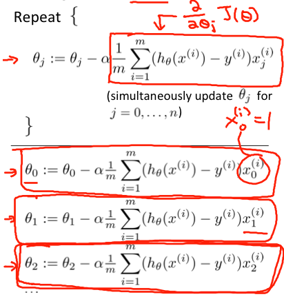
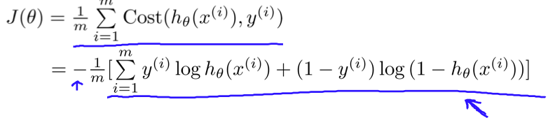

人工智能和机器学习最近几年出现井喷式发展，私以为机器学习非常有可能成为将来程序员的必备技能，这是时代对我们提出的新要求。吴恩达教授在coursera上教授的Machine Learning课程，可以说是入门机器学习的最佳选择。我在2016年完成了此门课程的学习，但在后续课程的学习过程中，发现自己对这门课程的掌握并不牢固。本文将对自己的学习过程和所得进行简单的总结，希望借此打下更牢固的基础。
课程大纲
- 机器学习
- 监督学习
- 线性回归
- 单变量线性回归
- 多变量线性回归
- 逻辑回归
- 正则化
- 神经网络
- 机器学习应用建议
- 机器学习系统设计
- 支持向量机
- 线性回归
- 非监督学习
- 聚类算法
- 降维算法
- 异常检测
- 推荐系统
- 大规模机器学习
- 应用举例: OCR
- 监督学习
监督学习 VS. 非监督学习
监督学习和非监督学习的区分原则很直观: 给定训练数据的同时，是否也给了每个数据的”正确结果”。举例来说，对于一个图像分类问题，在给定图像的同时，还会给出图像属于哪个分类的说明，这就属于监督学习；而对于聚类算法来说，只是给出一堆数据，要求把数据按照相似性分成几个部分，这就是非监督学习。
强化学习通常被看成是与监督学习和非监督学习并列的一种学习方式。
线性回归
线性回归部分，介绍了损失函数、梯度递减的概念，是整个机器学习中最重要的基础。
损失函数又叫目标函数，可以看作我们的模型预测值与实际值之间差距的大小，损失函数值越小，说明我们的模型越正确。所以，解决一个机器学习问题的总体思路就是: 先得到损失函数，然后调整参数，以使目标函数值达到最小。
线性回归的损失函数是
其中，h(x)是我们的假设函数模型
$$h_\theta(x) = \theta_0 + \theta_1x_1 + \theta_2x_2 + \cdots + \theta_nx_n$$
梯度递减就是寻找损失函数最小值的一种方法。其过程类似于我们从山上一步一步走到山谷。数学上来说，就是各个方向的偏导数同步减小的过程。其中，步长和步数是可以调整的参数。步长大小要合适，长度太长的话，会容易”跑到对面山上去”，整个地图乱跑；太小的话，在一定的步数之內，可能尚未到达最小点。到达最小点之后，将会在附近徘徊。

这种递减方式叫做批量梯度递减，因為每次递减都需要所有的训练数据参与，当数据量很大的时候，速度会比較慢。
另外，最后到达的，不一定是最小值，可能只是极小值。
$\theta$ 要统一賦值，如果有三个参数要更新，必須要等到三个参数的新值都计算好以后，再一起賦值。
归一化：如果两种特征的值域相差很大，需要将其统一到［-1,1]的范围內。要注意归一化和正则化的区别。
逻辑回归
逻辑回归本貭上是个分类问題，引入了sigmoid函數：
$$ g(z) = \frac{1}{1+e^{-z}} $$
整合输入之后模型变成：
$$ h_\theta(x) = \frac{1}{1+e^{-\theta^Tx}} $$
线性回归的损失函数是相减得到误差，累计误差平方然后求平均，逻辑回归不一样，逻辑回归是靠log函数得到误差，而且不再求平方，直接累计误差求平均。

sigmoid函数将模型的值域固定在0到1之间，在损失函数中，该值域变成了作用域。从上图可以看出，若y=1，$h_θ(x)$接近1时，损失函数几乎为0，反之，当其接近0时，惩罚将会非常快速地增长。y=0时也是一样的道理。
正则化
正则化同样是机器学习中一个极其重要的概念，主要是为了防止出现过拟合问题。所谓过拟合，就是过分解读了训练数据的意义，导致模型过度契合训练数据，泛化能力不够，面对新的数据时，反而不能得到正确结果。
神经网络
神经网络可以说是当前机器学习中最重要的一个分支。本部分没有介绍CNN、RNN等神经网络，而是介绍了神经网络的一般原理，是后续学习的重要基础。
神经网络部分，绝大多数内容都比较简单。难度比较大，也是最重要的，是反向传播算法的推导和理解。
反响传播算法的推导
推导过程说不上难度有多大，但需要静下心来仔细看一下推导的过程，关键一点要理解好$\delta$的含义。
参数随机化
在线性回归和逻辑回归(有木有SVM?）中，我们都将$\theta$初始化为0。但这在神经网络中行不通了，因为这会导致每一层神经网络上的不同神经元值都一样，即只能学习到一个特征。
Gradient Checking
梯度检查可以看作是为防止出错而设立的一种保险措施。
方法论 - 应用建议和系统设计
本部分虽然没有介绍具体的某个技术，但却是解决实际问题的指导思想，是指引我们前行的红星和旗帜 :P 。主要包括：选择模型、判断欠拟合和过拟合、学习曲线、错误分析、Precision和recall的折衷等等。
为什么要有CV?
只分为训练数据和测试数据的话，在我们根据测试结果不断进行参数调整的过程中，实际上已经把测试数据也掺合进来了。所以，需要把数据集分成三个部分，再添加CV，使用CV来进行参数的调整，测试数据只负责测试，这样就能保证测试数据的公正性和独立性。
三条曲线
第一条以模型的次数d为自变量，第二条以$\lambda$为自变量，第三条是学习曲线，以训练数据的数量m为自变量。三条曲线纵轴都是error。
前两条曲线形状基本一致，只是左右方向相反。这很容易理解，因为lambda就是为了防止d太大导致过拟合而出现的。
数据量很少的时候，模型能很好的适应训练数据，所以训练的error很小，但是由于模型并没有被训练好，验证集的error会很高；随着数据量增多，模型并不能保证满足所有的训练数据，所以error会增大，而验证集会因为模型越来越好而减小错误。
跑偏的错误分析
如果数据集中两个分类的数量差别很大，比如99%都是A类，1%是B类，那么我们即使都判断为是A类，也能有99%的正确率。因此我们需要其他的方式来进行判断。
Precision: 预测为A类的数据中，真正是A类的数据的比例
Recall: 真正是A类的数据中，预测为A类的比例
F1 score
这里讲的主要是Precision和Recall的折衷问题。如果我们把确信值定的很好，比如0.9, 那Precision值就会很高，但是Recall就会很低；如果确信值定的低，那么会是相反的情况。
这就引出了如何在Precision和Recall之间进行选择的问题，答案就是F1值: F1 = 2PR/(P+R)。我们应使F1值尽量大。
支持向量机
支持向量机內容比较晦澀。花费了大量的时间学习，依旧是一知半解。吴恩达教授主要讲了两部分的内容: large margin和核函数。
支持向量机相比逻辑回归最大的优势在于，其可以选择”最保险”的分类方案。即当有多种方案可以选择的时候，支持向量机可以选择使分界线到两边数据的margin最大的方案。
当分界线不是直线而是比较复杂的曲线的时候，可以使用核函数来代替$x_1$， $x_1^2$， $x_1x_2$等选择，能够达到更好的分类结果。
非监督学习
非监督学习部分，主要介绍了四种算法：聚类，降维，异常检测，推荐系统。
PCA
在SVD之前，要对数据求协方差矩阵。事实上，之前在各特征（而不是各个数据）上进行的归一化处理也是求协方差矩阵的一部分。数据X的协方差矩阵，实际上是数据各个特征之间的协方差矩阵。通过这个协方差矩阵，可以看出数据特征之间的依赖关系。
大规模机器学习和应用举例
大规模数据学习介绍了两种非常重要的梯度下降算法：小批量梯度下降和随机梯度下降，在数据量非常大的时候能显著减少训练时间。此外，还介绍了google的map-reduce架构和并行数据处理。
本课程在最后一部分举了一个实际应用的例子：照片OCR处理。结合这个例子，又介绍了如何获取更多训练数据、如何分析系统瓶颈等问题。
分析系统瓶颈
机器学习系统一般都由几个模块组成，如果最终结果不够理想，我们应该选择哪个模块进行改善?
方法就是，通过人工将某个模块的正确率提升为100%, 然后查看整个系统最后的提升是多少。提升最大的模块，就是但前系统的瓶颈所在，应该优先对该模块做出改善。